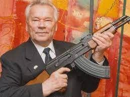

Ak-47 haqqında qısa məlumat
Tarixi haqqında:
1943-cü ildə Elizarov və Seminanın işlədikləri 7,62 mm patrona uyğun olaraq yeni
silah hazırlanmağa başlanır. Pistolet-pulemyotları əvəz etmək üçün yeni fərdi avtomatik silaha ehtiyac var idi.
Bu avtomat dəyişiləbilən daraq və rejimləri çevirən mexanzimə malik,
karabin daraqlı, yəni özü gülləni verən, yüngül pulemyot xassələri özündə cəmləməli idi
Yaradıcısı:
Mixail Kalaşnikov 1919-cu il noyabrın 10-da Altay vilayətinin Kurya kəndində anadan olub.
Kalaşnikovun böyüdüyü kəndli ailənin 18 uşağı dünayaya gəlsədə, onlardan yalnız 6 uşaq sağ qalıb, boya-başa çatıb.
1938-ci ildə Kalaşnikov Qızıl Orduya çağırılıb, 1941-ci ilin oktyabr ayında yaralandıqdan sonra, Kalashnikov xəstəxanada
müalicə aldığı dövrdə məşhur avtomatının ilk modelini icad edərək, onun eskizlərini və ilk variantını yaradıb.
